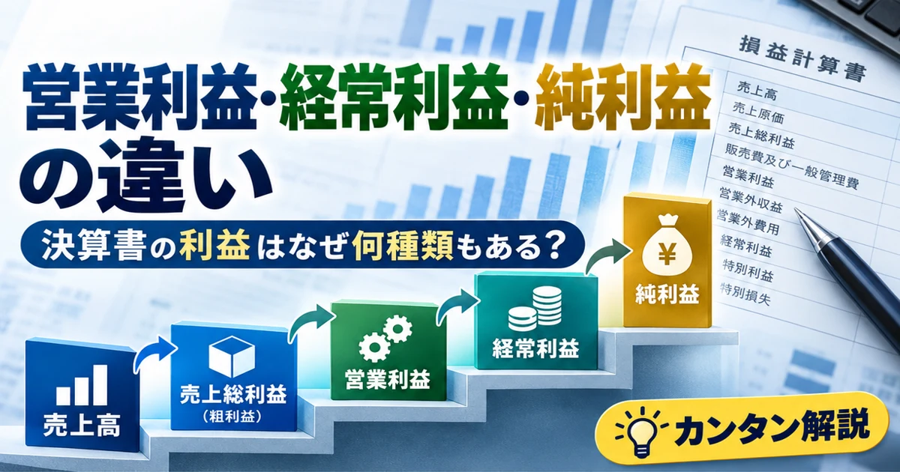
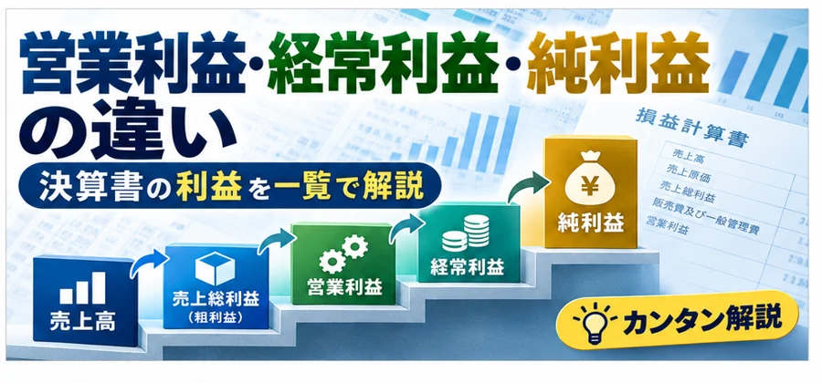

株式投資・企業分析
営業利益・経常利益・純利益の違いとは？決算書の利益の種類と見方を初心者向けに解説
「営業黒字なのに最終赤字？」という決算ニュースの疑問を、利益の種類・計算例・利益率・キャッシュフローの順に整理します。

この記事の目次
決算書にはなぜ複数の利益がある？
売上高がそのまま企業の儲けになるわけではありません。仕入れや製造の費用、販売・管理の費用、利息などの営業外損益、特別損益、税金を段階的に反映することで、企業の収益を異なる角度から確認できます。
ここでは日本基準の一般的な損益計算書を中心に解説します。IFRS（国際会計基準）や米国会計基準では表示項目・定義・区分が異なる場合があります。
利益の種類を一覧表で比較
| 利益 | 意味 | 計算の考え方 | 何が分かるか | 注意点 |
|---|---|---|---|---|
| 売上総利益（粗利益） | 売上から売上原価を引いた利益 | 売上高−売上原価 | 商品・サービスの基本的な採算 | 販管費はまだ反映していない |
| 営業利益 | 主に本業の営業活動による利益 | 売上総利益−販管費 | 本業の収益力の目安 | 業種・会計基準で定義や表示が異なる |
| 経常利益 | 営業外損益を含めた利益 | 営業利益＋営業外収益−営業外費用 | 利息などを含む通常の収益状況 | 日本基準に特徴的な指標 |
| 税引前当期純利益 | 税金を反映する前の利益 | 経常利益＋特別利益−特別損失 | 特別損益を含めた税引前の結果 | 一時的な要因で変動する |
| 当期純利益 | 法人税等を反映した利益 | 税引前当期純利益−法人税等 | 最終的な会計上の利益 | 連結では親会社帰属分と区別する |
連結決算の「当期純利益」は非支配株主に帰属する利益を含む場合があります。親会社株主に帰属する当期純利益とは必ずしも一致しません。
売上高から純利益までの流れ
日本基準の一般的な損益計算書を簡略化した図です。実際の表示は企業や会計基準、連結・個別の別によって異なります。
架空企業の決算で計算してみよう
以下は理解のための架空の企業・架空の数字です。実在企業の決算ではありません。
| 項目 | 金額（億円） |
|---|---|
| 売上高 | 1,000 |
| 売上原価 | 600 |
| 売上総利益 | 400 |
| 販売費及び一般管理費 | 250 |
| 営業利益 | 150 |
| 営業外収益 | 10 |
| 営業外費用 | 30 |
| 経常利益 | 130 |
| 特別利益 | 5 |
| 特別損失 | 35 |
| 税引前当期純利益 | 100 |
| 法人税等 | 30 |
| 当期純利益 | 70 |
1,000−600＝400（売上総利益）
400−250＝150（営業利益）
150＋10−30＝130（経常利益）
130＋5−35＝100（税引前当期純利益）
100−30＝70（当期純利益）
営業利益とは？
営業利益は、売上総利益から販売費及び一般管理費を差し引いたもので、本業の収益力を考える代表的な指標です。人件費や広告宣伝費などを負担して、どれだけ利益が残ったかを見る手掛かりになります。
ただし、金融業など業種によって利益表示が異なり、IFRSなどでは営業利益の定義や表示方法が日本基準と一致しない場合があります。
経常利益とは？
経常利益＝営業利益＋営業外収益−営業外費用です。例えば預金や貸付による受取利息は営業外収益、借入金の支払利息は営業外費用になる場合があります。
経常利益は日本基準で使われる代表的な指標です。IFRSの財務諸表には通常、同じ名称の項目はありません。海外企業を比較する際は同じ名前の利益があると決めつけないようにしましょう。
純利益とは？
税引前当期純利益に法人税等を反映した、最終段階の会計上の利益が当期純利益です。連結決算では、親会社の株主に帰属する部分を示す親会社株主に帰属する当期純利益が重要です。
EPS（1株当たり利益）は、基本的に親会社の普通株主に帰属する利益を期中平均株式数などで割って算定する指標です。株式数の変化も影響するため、利益総額と合わせて見ます。
営業黒字なのに最終赤字になる理由
本業で黒字でも、特別損失などが大きければ最終赤字になることがあります。以下も架空例です。
営業利益 ＋100億円
営業外損益 −10億円 → 経常利益90億円
特別損失 −150億円 → 税引前当期純損失60億円
法人税等 0億円（簡略化）
＝ 当期純損失60億円
例えば固定資産の減損損失や事業撤退に伴う損失などが影響します。ただし、特別損失がすべて一時的とは限らず、発生時に現金支出を伴うとも限りません。注記やキャッシュフローも確認しましょう。
営業赤字なのに最終黒字になることはある？
あります。例えば営業損失が20億円でも、資産売却益などが50億円あり、ほかの損益・税金を差し引いても利益が残れば最終黒字になり得ます（架空例）。
ただし資産売却益などが毎年続くとは限りません。継続的な収益力と一時的な利益を分けて評価することが重要です。
利益率で比較すると何が分かる？
利益の金額だけでなく、売上高に対する割合を見ると採算を比較しやすくなります。先ほどの架空例（売上高1,000億円）では次のとおりです。
売上総利益率＝400÷1,000×100＝40％
営業利益率＝150÷1,000×100＝15％
純利益率＝70÷1,000×100＝7％
同業他社との比較や過去数年間の推移を見ると変化に気付きやすくなります。ただし業種によって費用構造が違うため、異業種間で単純に高低を比較しないでください。
利益とキャッシュフローは何が違う？
利益は会計上の収益と費用に基づく数字で、現金の増減とは一致しません。売掛金は売上を計上しても代金回収がまだの状態を生み、減価償却費は支出時期と費用計上時期が異なります。設備投資は多額の現金支出につながる場合があります。
黒字＝現金が増えている、ではありません。フリーキャッシュフローの記事は既存資料でURLを確認できなかったため、推測したリンクを設置していません。URL確認後に追加してください。
決算ニュースで確認したいポイント
- 売上高は増えているか
- 営業利益は増えているか
- 営業利益率は改善しているか
- 経常利益と営業利益に大きな差がないか
- 特別損益が発生していないか
- 最終利益の増減理由は何か
- 一時的な要因による増益・減益ではないか
- 前年同期や会社予想と比較してどうか
- キャッシュフローの状況はどうか
数字だけでなく、決算短信の説明や注記、会社予想も合わせて読みましょう。
よくある質問（FAQ）
営業利益と経常利益は何が違いますか？
経常利益は営業利益に営業外収益と営業外費用を反映した利益です。
営業利益と純利益は何が違いますか？
営業利益は主に本業の利益、純利益は営業外損益・特別損益・税金なども反映した利益です。
売上総利益とは何ですか？
売上高から売上原価を差し引いた利益で、粗利益とも呼びます。
営業黒字なのに最終赤字になるのはなぜですか？
特別損失や営業外費用などが営業利益を上回る場合があるためです。
経常利益はIFRSにもありますか？
IFRSの財務諸表には通常、日本基準と同じ経常利益という名称の項目はありません。
当期純利益と親会社株主に帰属する当期純利益は同じですか？
必ずしも同じではありません。連結の当期純利益には非支配株主に帰属する利益が含まれる場合があります。
利益が増えれば現金も増えますか？
必ずしも増えません。売掛金の増加、設備投資、減価償却などで現金の動きと利益は異なります。
企業分析ではどの利益を重視すればよいですか？
目的によって異なります。営業利益・経常利益・純利益・利益率・キャッシュフローを組み合わせて確認しましょう。
まとめ
売上総利益は基本的な採算、営業利益は本業の収益力、経常利益は営業外損益を含む状況、税引前当期純利益は特別損益まで含む結果、当期純利益は税金などを反映した最終段階の利益を表します。
どれか一つの利益だけで企業の良し悪しは判断できません。利益率、増減理由、会計基準、キャッシュフローも併せて確認しましょう。
関連記事を画像で確認

ご利用にあたっての注意事項
本記事は金融教育を目的とした一般的な情報であり、特定銘柄の売買を推奨するものではありません。会計基準・企業の事業内容によって利益の表示は異なります。投資判断は最新の開示資料を確認し、ご自身の判断と責任で行ってください。